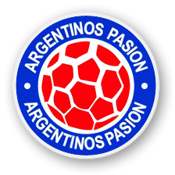

Argentinos Pasión es un medio periodístico partidario de la Asociación Atlética Argentinos Juniors, creado en el año 2002, apareció con la puesta en el aire de este sitio en Internet que lo hace hoy, el sitio vigente, más antiguo del club. Luego salió al aire su programa radial en ese momento por FM Folk.

Hoy tenemos 2 programas semanales:
- A puro Bicho, Domingos 12 hs.
- El programa del hincha, Miércoles 20 hs.
Transmisión de los partidos de 1ra División:
- Argentinos Un Sentiniento
Presencia en las redes sociales:
- Facebook /ArgentinosPasion
- Twitter @AAAJPasion_
- Instagram @AAAJ.Pasion
- Youtube @AAAJPasion
Gráfico:
- La Revista de Argentinos Pasion